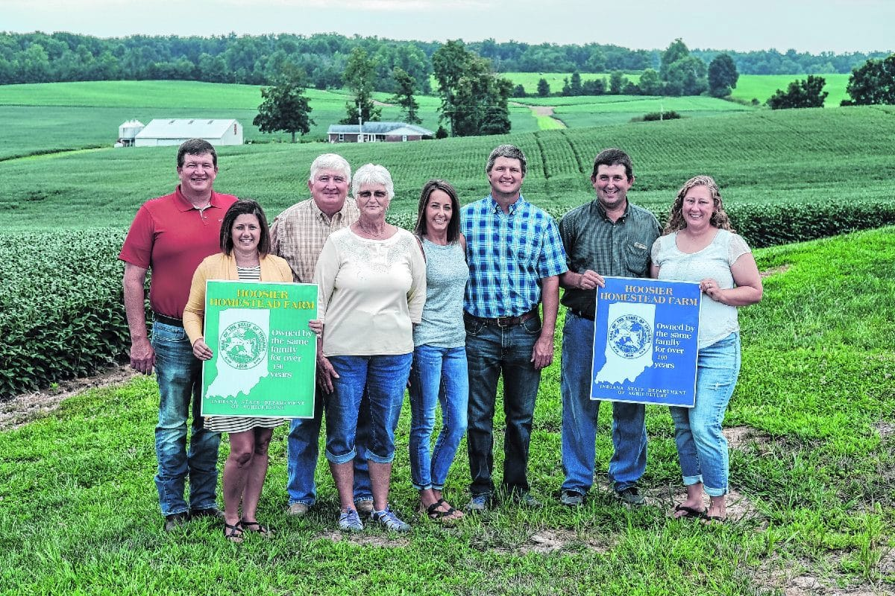
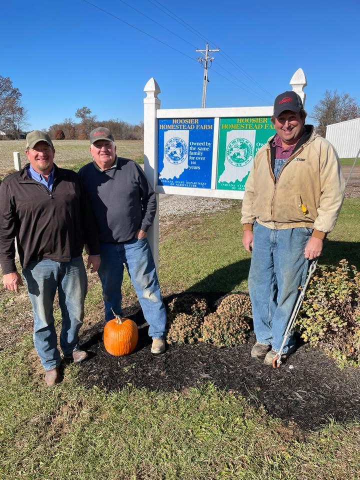
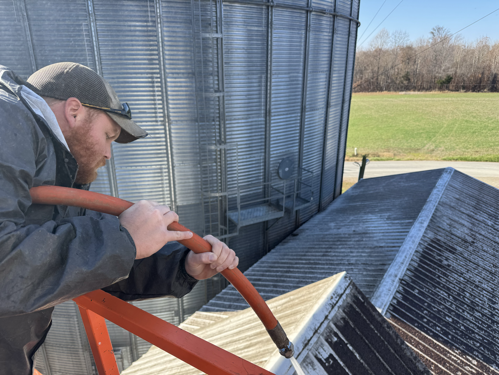
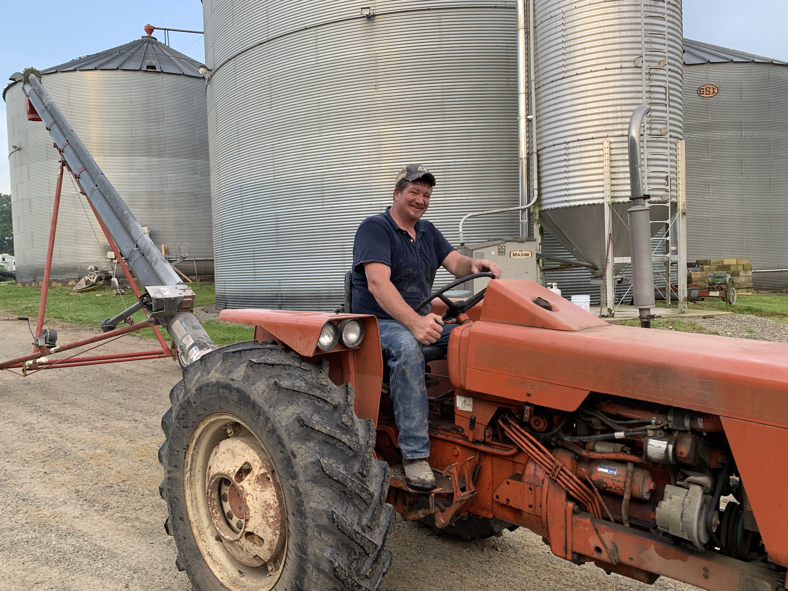
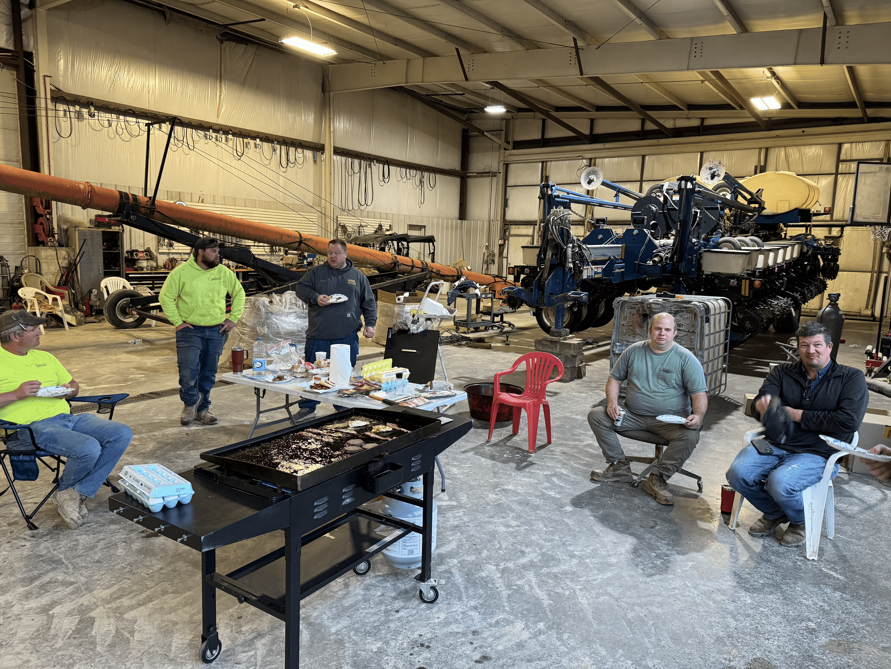

Our farm was first founded by Frederick William and Anna Meier in 1864. They bought 80 acres of farmland, which eventually became the family farm known as Engelau Farms. For over 30 years, Engelau Farms was owned by Harold “Pete” Engelau and his two sons, Ed Engelau and Jason Engelau.
In 2025 and six months later in 2026, Pete and Ed sadly lost their battles with cancer. We honor their memory by carrying forward their pride in feeding America.
